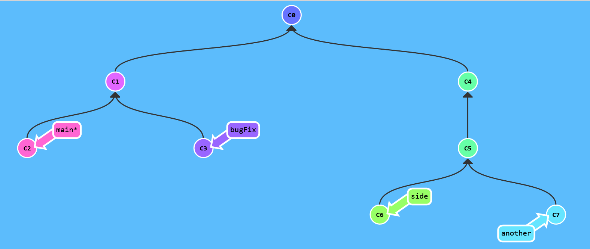

Git Befehle

Git ist das am weitesten verbreitete Versionsverwaltungssystem der Welt. Das Programm, das 2005 von Linus Torvalds entwickelt wurde, ist für viele Softwareentwickler unverzichtbar geworden.
Kommerzielle und Open-Source-Projekte vertrauen auf Git.
Doch was wäre die Software ohne ihre Befehle? Auf dieser Webseite möchten wir uns achtzehn der wichtigsten Git Befehle einmal näher ansehen.
Initialisierung
git init
Durch die Ausführung des Befehls git init wird ein neues Repository erzeugt.Dabei kann zwischen zwei Nutzungsarten unterschieden werden. Entweder er wird für die Konvertierung eines bestehenden Projektes in ein Git-Repository verwendet, oder zur Erstellung eines ganz neuen und noch leeren Repositorys. Der Befehl erstellt im Arbeitsverzeichnis ein Unterverzeichnis, das alle notwendigen Metadaten für das Repository enthält. Der erste Befehl, der in einem Projekt meist ausgeführt wird, ist also git init.
Klonen
git clone [url]
Ein schon (auf GitHub) existierendes Repository kann durch git clone lokal heruntergeladen werden. Es wird ein Klon, beziehungsweise eine Kopie erstellt. Alle Dateien, branches und commits bleiben dabei enthalten. Ähnlich wie git init ist auch git clone ein Befehl, der in der Regel nur einmal ganz am Anfang des Projektes ausgeführt wird.
mehr erfahren
Anzeigen der commit-Historie
git log
Im Laufe eines Projektes kann der Fall auftreten, dass ein Teammitglied zurückschauen möchte, um einen Überblick über die getane Arbeit zu bekommen. Am einfachsten geht das über den Befehl git log. Er listet alle existierenden commits des Projektes in chronologischer Reihenfolge auf, von neu nach alt. Zusätzlich werden Informationen wie die Prüfsumme, der Name, die Mailadresse des Autors, das Erstellungsdatum und die commit-Beschreibung ausgegeben. Auch wenn man ein Repository mit bestehender Historie geklont hat, kann git log sehr hilfreich sein, um zu erfahren was wann wie geschehen ist.
Vergleich
git diff [first-branch]…[second-branch]
Mit dem Befehl git diff können die Unterschiede zweier Datenquellen ausgegeben werden. Diese Datenquellen können beispielsweise commits, branches und Dateien sein. Häufig wird der Befehl im Zusammenhang mit git log verwendet, wenn ein Repository untersucht werden soll.
Anzeigen
git show [commit]
Über diesen Befehl lassen sich Metadaten und andere erweiterte Details zu einem bestimmten Objekt ausgeben. Dies können Blobs, Strukturen, Tags und Commits sein. Je nach Objekttyp zeigt der Befehl ein spezifisches Verhalten. Für Tags werden beispielsweise die Tag-Nachricht und andere im Tag enthaltene Objekte angezeigt.
Datei zum Index hinzufügen
git add [file]
Mit dem Befehl git add werden Änderungen aus dem Arbeitsverzeichnis zur Staging-Umgebung hinzugefügt. Damit wird git angewiesen, Aktualisierungen einer bestimmten Datei in den nächsten Commit aufzunehmen. Der Befehl hat also bis zur nächsten Ausführung von git commit keine Auswirkung auf das Repository.
mehr erfahren
Änderungen speichern
git commit
Durch die Ausführung von git commit wird ein commit, also ein Schnappschuss des Repositorys erstellt. Commits sind Momentaufnahmen des gesamten Repositorys zu einem bestimmten Zeitpunkt. Git commit sollte häufig und basierend auf logischen Änderungseinheiten ausgeführt werden. Über commits kann im Nachhinein die Entstehung des Repositorys nachvollzogen werden. Neben dem Inhalt enthalten sie Metadaten wie den Autor und den Zeitstempel.
mehr erfahren
Herunterladen
git fetch
Um Dateien, commits und branches aus einem remote-Repository in ein lokales Repository herunterzuladen, gibt es den Befehl git fetch. Bei der Ausführung werden die Inhalte zwar heruntergeladen, es folgt aber keine automatische Aktualisierung der Dateien im lokalen Repository. Die aktuelle Arbeit bleibt also „sicher“. Das Abrufen des Befehls ist vor allem dann interessant, wenn man wissen möchte auf was für einem Arbeitsstand andere Teammitglieder sind
mehr erfahren
Verschmelzung
git merge
Git merge wir genutzt, um einen oder mehrere branches in den ausgecheckten branch zusammenzuführen. Es können also unabhängige Entwicklungszweige in einen einzigen branch integriert werden. Mit git merge werden mehrere commit-Abfolgen in einen einheitlichen Verlauf gebracht. Vor allem genutzt wird es aber, um zwei branches zu vereinen.
mehr erfahren
Hochladen
git push
Um Änderungen, die im lokalen Repository vorgenommen wurden, an das remote-Repository zu senden, verwendet man den Befehl git push. So werden die eigenen Änderungen für alle Teammitglieder zugänglich und einsehbar gemacht.
mehr erfahren
Herunterladen und Verschmelzen
git pull
Durch den Befehl git pull werden Inhalte von einem remote-Repository heruntergeladen und direkt in den aktuellen branch intergriert. Der Befehl ist eine Kombination aus git fetch und git merge. Durch das Ausführen von git pull spart man zwar Zeit, kann aber die Inhalte nicht auf mögliche Fehler untersuchen, bevor man sie in die eigene Datei überführt.
mehr erfahren
Neuer Zweig / branch
git branch [branch-name]
Mit dem Befehl git branch [branch-name] wird ein neuer branch erstellt. Dieser wird bei der Erstellung auch direkt benannt. Der neue branch wird allerdings nicht automatisch ausgecheckt.
mehr erfahren
Einen Zweig / branch wechseln
git checkout [branch-name]
Zwischen branches, die mit git branch erstellt wurden, kann mit dem Befehl git checkout gewechselt werden. Der branch, der gerade ausgecheckt ist, kann bearbeitet werden. Beim Auschecken eines branches werden die Dateien im Arbeitsverzeichnis aktualisiert und Git speichert alle neuen commits in dem ausgecheckten branch. Man kann also auswählen an welchem Entwicklungszweig man arbeiten möchte.
mehr erfahren
Löschen eines Zweiges / branches
git branch -d [branch-name]
Durch git branch -d kann der ausgewählte branch gelöscht werden.
Umbauen
git rebase [branch-name]
Mithilfe des Befehls git rebase kann eine Abfolge von commits in einem neuen Basis-commit verschoben oder zusammengeführt werden. Dabei ändert sich die Basis des branches von einem commit zu einem anderen. Es sieht dann so aus, als hätte man den branch von einem anderen commit erstellt. Die branches sehen zwar gleich aus, bestehen aber aus völlig neuen commits.
„Herauspicken“
git cherry-pick [commit1] [commit2] […]
Mit dem cherry-pick Befehl ist es möglich, einen beliebigen commit anhand einer Referenz auszuwählen und an den aktuellen Arbeits-HEAD anzuhängen. Ein commit wird aus einem branch ausgewählt und auf einen anderen angewendet. Der Befehl kann besonders hilfreich sein, um Änderungen rückgängig zu machen.
Tag
git tag [tag-name] [ref/commit]
Der Befehl git tag ist der Hauptbefehl für das Erstellen, Ändern und Löschen von Tags. Tags sind Referenzen, die auf bestimmte Zeitpunkte in der Historie verweisen. Nach der Erstellung haben Tags keinen weiteren Verlauf. Ein tag ähnelt einem branch, der sich nicht ändert.
Status anzeigen
git status
Der Befehl git status gibt den Status des Arbeitsverzeichnisses und der Staging-Umgebung zurück. So kann man sehen, welche Änderungen sich in der Staging-Umgebung befinden, welche nicht und welche Dateien nicht von Git verfolgt werden.
mehr erfahren